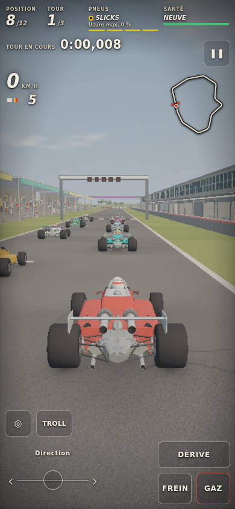

2 captures · 0 alertes à examiner · Rapport complet
Horloge de simulation commandée : ces images ne mesurent pas les performances. Une ombre, un mouvement rapide ou un éclair légitime peut déclencher une alerte. Cliquer une image pour l’examiner en taille réelle.
Version V0.2.80 · ANGLE (Google, Vulkan 1.3.0 (SwiftShader Device (Subzero) (0x0000C0DE)), SwiftShader driver)
Build : 20185cd2341e2aefb7a5167a35c1f4d68a50eedf1d9fabaa8491c329fa87410a

{
"parametres": {
"graine": 17017,
"circuit": 0,
"qualite": "low",
"mode": "solo",
"vue": "poursuite",
"vue2": "cockpit",
"meteo": "sec",
"moment": "jour",
"saison": "ete",
"partage": "haut-bas",
"retro": "non",
"depart": 280,
"vitesse": 75,
"images": 2,
"pas": 0.016666666666666666,
"chauffe": 0,
"taille": [
390,
844
],
"angle": "swiftshader"
},
"environnement": {
"navigateur": "Mozilla/5.0 (iPhone; CPU iPhone OS 17_0 like Mac OS X) AppleWebKit/605.1.15 (KHTML, like Gecko) Version/17.0 Mobile/15E148 Safari/604.1",
"gpu": "ANGLE (Google, Vulkan 1.3.0 (SwiftShader Device (Subzero) (0x0000C0DE)), SwiftShader driver)",
"webgl": "WebGL 2.0 (OpenGL ES 3.0 Chromium)",
"resolution": [
390,
844,
1
],
"version": "V0.2.80",
"backend": "webgl2",
"gpuModeste": true,
"webgl2": true,
"physx": {
"disponible": true,
"ready": true,
"version": "5.12.0",
"erreur": null
}
},
"limites": [
"Temps rAF commandé, aucune conclusion FPS/temps image réel à partir de cette séquence.",
"Les alertes visuelles sont des candidats à examiner, pas des défauts prouvés.",
"Le son, les manettes physiques et une partie WebRTC entre machines ne sont pas qualifiés.",
"Les zones rectangulaires suivent les toiles visibles ; les éléments de HUD superposés peuvent masquer un défaut local.",
"Deux images : aucun contrôle de variation fugitive sur trois images.",
"Chrome avec viewport, toucher et identifiants iPhone émulés ; ce contrôle ne remplace pas un essai Safari/iOS matériel.",
"Wrappers de comptage : fonctions et résultats natifs conservés ; aucune sortie de benchmark substituée.",
"Rendu logiciel : aucune performance de GPU réel n’est qualifiée."
]
}